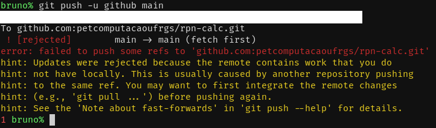
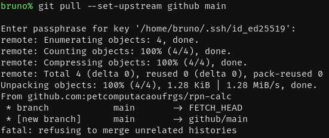
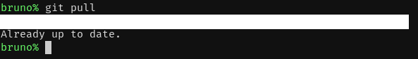

O Que É O Git?
Se eu fosse resumir a resposta, ela seria: git é uma ferramenta distribuída de controle de versionamento de software. As alterações de uma versão do software são chamadas "commit". Os arquivos que contêm as versões são chamados "repositório".
O Que É Controle De Versionamento?
Controle de versionamento de um software é o registro das alterações dos arquivos de um software ao longo do seu desenvolvimento; é o registro da história de um software. No entanto, é bom notar que versionamento normalmente não envolve grandes saltos entre versões. Ao invés disso, registram-se novas versões em pequenas mudanças, pequenos saltos, como adicionar um arquivo ou reescrever uma função.
O Que Significa Ser Distribuído?
Versionadores costumam trabalhar com o conceito de "repositórios". Um repositório contém o software em questão e sua história. Alguns versionadores, como o SVN, centralizam um software em um repositório remoto (servidor). Isso significa que toda nova versão tem de passar pelo servidor. Este não é o caso do Git. O Git possibilita repositórios locais. Isto é, você pode ter toda história do software na sua máquina, fazer suas próprias mudanças, compartilhar com vários repositórios remotos, etc.
Git vs. GitHub
Às vezes a distinção entre Git e GitHub é confusa, mas é a seguinte: Git é o programa que faz o versionamento em si e administra repositórios; GitHub é um serviço que hospeda repositórios Git em um servidor. Existem outros serviços semelhantes, como o GitLab e o BitBucket.
Usar Git No Terminal Ou Na Interface Gráfica?
A implementação padrão do Git é um programa CLI (Command Line Interface), ou seja, é usada no terminal. Se você não se sentir confortável com o terminal, você pode usar alguma interface gráfica como GitKraken, Github Desktop ou Smart Git.
Este tutorial focará no programa CLI, uma vez que a interface é mais rápida de aprender. No entanto, os conceitos são os mesmos.
Instalação E Configuração
Windows
Acesse o link https://git-scm.com/download/win.
Linux
Você já tenha o Git instalado. Você pode verificar com o seguinte comando:
git --version
Se o git tiver instalado, o comando te dirá a versão do Git. Se não tiver, o recomendado é instalar pelo gerenciador de pacotes do seu sistema.
Arch Linux, Manjaro, etc
sudo pacman -S git
Debian, Ubuntu, etc
sudo apt-get install git
Fedora, RedHat Linux, etc
sudo dnf install git
Etc...
Configuração
A configuração obrigatória do Git é simples: basta dar nome e email.
Para definir seu nome como "João da Silva", basta executar:
git config user.name 'João da Silva'
Para definir seu email como "jdsilva@mail.com", basta executar:
git config user.email 'jdsilva@mail.com'
Para verificar o nome definido:
# Vai escrever na tela 'João da Silva'
git config user.name
Para verificar o email definido:
# Vai escrever na tela 'jdsilva@mail.com'
git config user.email
Dependendo da versão do Git, você pode precisar executar o seguinte comando também:
git config --global pull.rebase false
git help
Se você instalou o git, você deve ter a documentação instalada também. Para
acessar a documentação de qualquer comando, basta executar o seguinte:
git comando --help
# ou
git help comando
Por exemplo, para ver o manual do comando git init:
git init --help
# ou
git help init
Para sair do manual, aperte q.
git init
O Git gerencia os repositórios no mesmo diretório/pasta da aplicação. Para
inicializar o repositório, vá até o diretório do projeto e execute git init.
cd meu/projeto
git init
Você verá que o diretório conterá uma pasta oculta chamada .git.
Jamais edite o conteúdo dessa pasta diretamente. O Git gerencia ela por
você.
Staging Area
Quando se deseja começar uma nova versão, não se edita um arquivo e imediatamente ele é registrado. É possível, inclusive, registrar somente certos arquivos na nova versão, deixando de lado outros arquivos modificados. A staging area é o conjunto de arquivos cujas mudanças serão incluídas na nova versão.
Na janela de tempo entre uma versão e outra, os arquivos podem estar em quatro estados. Estes são:
- Não-modificado (unmodified)
- Modificado (modified)
- Não-rastreado (untracked)
- Staged
Estado Não-Modificado
Arquivos neste estado estão na versão atual (HEAD) e não foram alterados.
Estado Modificado
Arquivos neste estado estão na versão atual (HEAD), foram alterados, mas não constarão na próxima versão.
Estado Não-Rastreado
Arquivos neste estado não estão presentes na versão atual (HEAD) e não constarão na próxima versão.
Estado Staged
Arquivos neste estado trazem alguma mudança e constarão na nova versão.
git add
Para adicionar arquivos modificados ou não-rastreados à staging area, existe
o comando git add. A sintaxe do commando é:
Adicionando um arquivo:
git add arquivo1
Adicionando múltiplos arquivos:
git add arquivo2 arquivo3 arquivo4
Adicionando diretórios inteiros:
git add src/
É uma padrão comum adicionar todo diretório atual (lembre-se de que .
significa "o diretório atual").
git add .
Há também a flag -A que adiciona todas as modificações, do projeto inteiro.
git add -A
Na prática, git add . e git add -a se comportam da mesma forma. Os dois só
diferem quando o diretório atual não é a raiz do projeto, como por exemplo, o
diretório ./src/.
git status
O comando git status mostra o estado relativo à staging area. A sintaxe é
simples:
git status
Um exemplo de saída:

git commit
Para registrar uma nova versão, utiliza-se o comando git commit. Somente as
mudanças com estado "staged" farão parte do commit. Sintaxe do comando:
git commit -m 'mensagem do commit'
A mensagem do commit deve ser um resumo ou uma identificação das mudanças
introduzidas. É recomendado que a mensagem do commit não tenha muito mais do que
50 caracteres. É possível inserir a mensagem usando um editor de texto (por
padrão, no Linux, é o vi), basta ocultar a opção -m e a mensagem, assim:
git commit
A todo commit, o Git associa um número chamado de hash. O número sempre é
apresentado na sua forma hexadecimal, como por exemplo:
80ba4e49ee1fc346ee4934bdd2b4581e61b5c5fa.
git rm E git mv
Às vezes o Git não é tão inteligente e não sabe diferenciar o caso de:
- Você reescreveu um arquivo vs. você removeu o arquivo e criou um novo com mesmo nome;
- Você renomeou um arquivo vs. você removeu o arquivo e criou outro parecido.
Para resolver isso, existem os comandos git rm e git mv.
git rm
O comando git rm registra no repositório que você removeu o arquivo, de tal
forma que o Git não considerará que você reescreveu o arquivo ou renomeou.
Exemplo, para remover o arquivo main.c:
git rm main.c
git mv
O comando git mv registra no repositório que você renomeou o arquivo, de tal
forma que o Git não considerará que você removeu arquivo. Exemplo, para renomear
o arquivo main.c de tal forma que o nome seja main.py:
git mv main.c main.py
git reset E git restore
Para o caso de ser necessário tirar uma mudança do estado staged, ou até mesmo
voltar ao estado do commit atual (HEAD), é possível usar os comandos git reset
e git restore.
git restore
O comando git restore restaura os arquivos que estão visiveis (working tree)
para serem idênticos aos do commit atual (HEAD). Para restaurar os arquivos
main.c e vetor.c, por exemplo:
git restore -- main.c vetor.c
O comando git restore, no entanto, não está presente em versões desatualizadas
do Git, por isso, você pode precisar usar o comando git reset.
git reset
O comando git reset é semelhante ao git restore, mas tem mais variações
além de ser mais fácil de fazer algo errado. Se não for usada nenhuma flag, ou
a flag --mixed for usada, os arquivos que estavam staged vão deixar de ser
staged, mas não serão alterados. Por exemplo, para restaurar todos os
arquivos:
git reset --mixed HEAD
# ou simplesmente
git reset HEAD
Com a flag --hard, o comportamento é semelhante ao de git restore, exceto
que arquivos novos não serão deletados.
git reset --hard HEAD
Há ainda a flag --soft, que será explicado mais a frente, pois envolve um uso
do comando ainda não explicado.
.gitignore
No Git, é possível especificar arquivos para serem ignorados. Isto é, estes
arquivos não são incluídos em futuras versões do software, por mais que você
use git add neles. A especificação ocorre num arquivo chamado de .gitignore.
Para ignorar um arquivo senha-secreta.txt, basta adicionar o nome desse
arquivo ao .gitignore. Para ignorar todos os arquivos terminados em .mp3,
basta usar um asterisco seguido da extensão (*.mp3).
Portanto, nesse cenário hipotético, o arquivo .gitignore se pareceria assim:
/senha-secreta.txt
*.mp3
Juntando tudo
Então, como usar estes comandos em conjunto? O fluxo normal é git add =>
git status => git commit. Eis um exemplo. Primeiro criaremos o projeto:
mkdir projeto
cd projeto
git init
Agora, introduziremos um arquivo main.c:
int main()
{
return 0;
}
E vamos tornar nosso novo arquivo staged:
git add main.c
Vamos olhar o que estamos introduzindo:
git status

Pronto! Podemos fazer o nosso primeiro commit.
git commit -m 'adicionada a função principal'
Linhas do Tempo E Branches
No Git, os commits são arranjados em uma linha do tempo. Por padrão, essa linha do tempo é linear, mas o Git também permite expressar bifurcações na linha do tempo. Para isso, existe o conceito de "branch" (literalmente "galho", "ramo").
Por padrão, a primeira branch do repositório se chama "master". Ao fazer o primeiro commit, essa branch é criada. Esses diferentes "galhos" na linha do tempo, podem eventualmente juntar-se novamente, no que chamamos de merge (literalmente "união" ou "mescla"). É uma estratégia comum fazer-se várias branches com o objetivo de uní-las com a master eventualmente.
Branches
Uma branch é uma ramificação na linha do tempo do Git.
Criando E Trocando De Branch
Existem várias formas de criar uma branch. Uma delas, usando o comando
git branch, que simplesmente cria uma branch e não faz mais nada. Para criar
a branch com o nome "minha-branch", use:
git branch minha-branch
Por padrão, você não vai estar na branch que criou. Para trocar de branch use
git checkout, assim:
git checkout minha-branch
É possível, também, utilizar git reset para trocar de branch.
git reset minha-branch
A flag --soft troca de branch preservando alterações feitas mas que não
entraram no commit:
git reset --soft minha-branch
Para criar e trocar de branch ao mesmo tempo, use git checkout com a
flag -b, assim:
git checkout -b minha-branch
Por padrão, a nova branch começa do commit atual (HEAD). É possível criar
uma branch a partir de um commit, digamos, 0935946.
git branch minha-branch 0935946
Exemplo
Suponhamos um commit 3c97506 seguido de um commit ec49a96, ambos dentro
da branch master. A HEAD aponta para este último. Temos uma árvore assim:
master
ec49a96 <- HEAD
|
3c97506
Após fazermos uma nova branch "teste" (git checkout -b teste), e produzirmos
um novo commit 4b12d0a nela, temos a seguinte:
teste
4b12d0a <- HEAD
/
master /
ec49a96
|
3c97506
Se voltarmos para a master (git checkout master), e produzirmos um novo
commit 80ba4e4, temos:
master teste
HEAD -> 80ba4e4 4b12d0a
| /
| /
ec49a96
|
3c97506
Deletando Branches
Para deletar branches, existem duas formas. A primeira, a forma segura, requer
que você tenha feito merge dessa branch em outra antes (será explicado nos
próximos dois capítulos). Basta passar a flag -d para o comando git branch,
junto ao nome da branch:
git branch -d minha-branch
Para forçar a deleção sem ter salvo a branch em outra, use -D:
git branch -D minha-branch
Navegando Entre Commits
É possível, no Git, mudar o commit o HEAD para um commit passado. Esse é mais um
uso do comando git checkout.
Pàra navegar até o commit fae6c2e, use:
git checkout fae6c2e
No entanto, ao fazer isso, você entrará no "detached HEAD state" (estado de
HEAD descolado). Isso significa que você a HEAD não aponta para uma
branch, mas para um commit específico. O problema disso é: se você for fazer
um novo commit, ele não pertencerá a nenhuma branch. Portanto, não use
git checkout com o intuito de alterar a linha do tempo a partir de um commit
passado. Use-o somente para alternar entre branches ou para visualizar os
arquivos de um commit antigo.
Semelhantemente, é possível usar git reset.
git reset fae6c2e
Mas isso também entra no "detached HEAD state".
Para sair do "detached HEAD state", faça checkout para uma branch.
git checkout master
Merge
É possível aplicar as mudanças de uma branch à outra, num processo chamado de
merge. Usa-se o comando git merge. Por exemplo, suponha que estejamos em
uma branch minha-branch, e queiramos aplicar os commits de outra-branch
em minha-branch:
git merge outra-branch
Um merge aplica somente os commits que as branches não têm em comum.
Conflitos
Por padrão, sempre que houver um conflito em um arquivo, o Git tenta resolver mesclando as versões dos arquivos. No entanto, nem sempre é válida essa mesclagem. Nesses casos, o Git falha em resolver o conflito, e intervenção manual é requisitada.
Em cada arquivo, o que é comum entre as duas branches é mantido. Onde há o conflito, é indicado o quê pertence à branch atual, e o que pertence à outra branch. Assim:
int main()
{
<<<<<<< HEAD
vindo_da_minha_branch();
=======
vindo_da_outra_branchl();
>>>>>>> outra-branch
return 0;
}
Uma resolução de conflitos manual consiste em ir em cada um desses arquivos com
conflito, e, em cada conflito, escolher uma das versões, ou até mesmo
mesclá-las. Para descobrir-se quais arquivos precisam de interveção, basta
executar o comando git status. Após a resolução dos conflitos, e necessário
fazer um novo commit contendo os arquivos corrigidos.
Existem, no entanto, ferramentas para auxiliar na resolução dos conflitos, como
o kdiff.
Exemplo
Suponha o seguinte cenário, uma branch "master" e uma "teste":
master teste
HEAD -> 80ba4e4 b49a7ed
| |
| 4b12d0a
| /
| /
ec49a96
|
3c97506
Suponha que queiramos aplicar as os dois commits 4b12d0a e b49a7ed à
branch "master". Façamos o seguinte:
git merge teste
O resultado será o seguinte:
master
HEAD -> 47d7959
| \
| \ teste
80ba4e4 b49a7ed
| |
| 4b12d0a
| /
| /
ec49a96
|
3c97506
Note que a branch "teste" continuará existindo. Podemos fazer um novo commit nela:
master teste
47d7959 0935946 <- HEAD
| \ |
| \ |
80ba4e4 b49a7ed
| |
| 4b12d0a
| /
| /
ec49a96
|
3c97506
git rebase
Além do merge, é possível mover ou editar seus commits. O comando git rebase
permite isso. Há dois tipos de rebase: o interativo e o não-interativo.
Rebase Não-Interativo
Um rebase não-interativo "desloca" os commits de uma branch para de tal forma que os commits de outra branch façam parte da história desta branch, preservando o conteúdo dos arquivos da primeira branch. Por exemplo, imagine o seguinte cenário:
master teste
80ba4e4 b49a7ed <- HEAD
| |
| 4b12d0a
| /
| /
ec49a96
|
3c97506
Agora, suponha que queremos "fingir" que a branch começa no commit 80ba4e4
e não no commit ec49a96. Basta executarmos o seguinte:
git rebase master teste
O Resultado é:
teste
b49a7ed <- HEAD
|
4b12d0a
/
master /
80ba4e4
|
ec49a96
|
3c97506
Rebase Interativo
Para iniciar um rebase interativo desde 3 commits atrás, basta executar:
git rebase -i HEAD~3
Isso abrirá um editor de texto (No Linux, o padrão é o vi) para escolher como
você vai editar os commits. Você deve ver no editor um conteúdo similar a
esse:

A imagem por si só é bem descritiva. Note que você pode alterar a ordem também, como no rebase não-interativo. Mas como exemplo, tomemos a seguinte edição, onde juntaremos os dois primeiros commits em um (squash) e editaremos a mensagem do terceiro.

Ao salvarmos e saírmos do editor, seremos requisitados para fornecer a mensagem dos commits que serão fundidos.
Basta editar a área que não está comentada (isto é, que não inicia com "#"),
e sair do editor.

Depois, precisamos editar a mensagem terceiro commit do rebase. Para isso, basta executar:
git commit --amend
E um editor irá abrir para inserirmos a mensagem. Ele virá com a mensagem antiga, mas basta editar o texto de forma semelhante ao squash.
Para seguir em frente da edição do commit, basta executar:
git rebase --continue
Se em algum momento você quiser abortar o rebase, execute:
git rebase --abort
git log
O comando git log permite visualizar o histórico do repositório. Sua forma
mais básica é:
git log
Para sair do comando, basta digitar q. Exemplo de visualização:
É possível compactar a formatação do comando:
git log --oneline

Por padrão, o git log só exibe conteúdo da branch atual. Para mostrar outras
branches, a flag --all é necessária. Além disso, faz sentido visualizar o
grafo das branches neste caso, com a flag --graph:
git log --all --graph
git diff
Para visualizar diferenças entre versões do projeto, é possível utilizar o
comando git diff. O comando exibe diferenças no seguinte formato: uma versão
é dada como versão mais antiga, a outra como mais nova, as linhas que a versão
mais nova introduziu são marcadas com um + e as que a versão mais nova removeu
são marcadas com um -. Para visualizar a diferença entre um commit antigo
e544ad4 e um commit novo d4b67d0, basta executar:
git diff e544ad4 d4b67d0
Para sair do comando, basta digitar q.
Para visualizar a diferença apenas nos arquivos main.c e vetor.c, em relação
a esses mesmos commits, basta executar:
git diff e544ad4 d4b67d0 -- main.c vetor.c
Para visualizar a diferença entre algum commit e544ad4 e os arquivos que
você vê no diretório do projeto (working tree), basta executar:
git diff e544ad4
Para comparar duas branches "master" e "desenvolvimento", basta executar:
git diff master desenvolvimento
git show
É possível visualizar arquivos de outras versões com o comando git show. Por
exemplo, para visualizar o arquivo main.c do commit 650bb48, execute:
git show 650bb48:main.c
Para sair do comando, basta digitar q.
git tag
É possível rotular commits usando aqueles rótulos bem conhecidos para se
referir a versões de software como v0.1.3, v1.0, v2.5.3, etc. O comando
usado para tal é o git tag. Para marcar o commit atual como v1.0, basta
executar:
git tag v1.0
Para marcar outro commit 8b37825 como v1.3, basta executar:
git tag v1.3 8b37825
Para visualizar todas as tags:
git tag
Para deletar uma tag v2.0 (sem deletar o commit):
git tag -d v2.0
É importante notar que tags em geral marcam pontos do software onde ele está "pronto" para ser usado. Normalmente, são commits específicos que são marcados, não todos.
Repositórios Remotos
Como mencionado anteriormente, o Git é uma ferramenta distribuída. O repositório que você tem salvo na sua máquina local, é um repositório independente. No entanto, você pode hospedar um repositório em uma máquina remota. Trabalhando em um time, todos os integrantes poderão ter sua cópia do projeto, local e independente, mas vão publicar suas mudanças em um servidor remoto.
O GitHub é um serviço que hospeda repositórios de Git e projetos de software, principalmente projetos livres e projetos open source. No entanto, é possível hospedar projetos proprietários nele. Ironicamente, o GitHub em si é um serviço proprietário: ou seja, o código fonte do GitHub não está disponível para o livre uso, apesar de ser um serviço gratuito para projetos livres ou abertos.
Outro serviço é o GitLab. Ao contrário do GitHub, a versão gratuita do GitLab é livre.
O BitBucket é mais um serviço de hospedagem de repositórios.
git clone
Para clonar repositórios remotos, é possível usar o comando git clone. Para
clonar um repositório remoto através do link
https://github.com/petcomputacaoufrgs/intro-ao-git.git, basta executar:
git clone https://github.com/petcomputacaoufrgs/intro-ao-git.git
O repositório vai estar na pasta ./intro-ao-git, mas é possível escolher
o destino. Para clonar o repositório acima em ./esta/pasta, basta executar:
git clone https://github.com/petcomputacaoufrgs/intro-ao-git.git ./esta/pasta
git remote
Para gerenciar comunicação repositórios remotos, você precisa salvar no seu
repositório local referências para os repositórios remotos. Para fazer isso,
existe o comando git remote. Para adicionar um remoto, com nome "origin" e URL
https://github.com/petcomputacaoufrgs/intro-ao-git.git:
git remote add origin https://github.com/petcomputacaoufrgs/intro-ao-git.git
Por padrão, quando você usa git clone, ele cria um remoto chamado "origin".
Para visualizar os remotos salvos, basta executar:
git remote
Para visualizar a URL de um remoto chamado "origin", basta executar:
git remote get-url origin
Para remover um remoto chamado "origin", basta executar:
git remote remove origin
Para redefinir a URL de um remoto chamado "origin" com a URL https://github.com/fulanodasilva/intro-ao-git.git, basta executar:
git remote set-url origin https://github.com/fulanodasilva/intro-ao-git.git
git pull E git push
Para "puxar" mudanças de um repositório remoto, existe o git pull, e para
"empurar" mudanças a um repositório remoto, existe o git push.
git push
Para mandar suas mudanças a um remoto salvo como "origin" numa branch "master", use:
git push origin master
O comando, no entanto, pode falhar pelo fato de você não ter seu repositório
local atualizado com novas mudanças do remoto. Nesse caso, você terá de executar
o comando git pull antes, resolver um merge, e só então poderá executar
git push. Veja abaixo como executar git pull.
git pull
Semelhantemente, para receber mudanças de um repositório remoto salvo como "origin" numa branch master, use:
git pull origin master
Tome cuidado para que a HEAD esteja apontando para a mesma branch.
Além disso, note que, se seu repositório local tiver novos commits, e o remoto também tiver novos commits, divergindo a respeito da história da branch, você terá de resolver um merge.
Tags Também Podem Ser Movimentadas
Suponha que você tenha executado:
git tag v0.3.5
Para mandar essa tag para o remoto "origin", execute:
git push origin v0.3.5
Exemplo
Como um exemplo de projeto que use Git, vamos desenvolver uma calculadora RPN, e usaremos Git para versionar o projeto. O projeto desenvolvido pode ser encontrado no endereço https://github.com/petcomputacaoufrgs/rpn-calc.
Uma calculadora RPN usa notação polonesa reversa, uma notação pósfixa. Por
exemplo, 3 + 2 em RPN é escrito 3 2 +, enquanto (5 + 4/3 - 1) * 2 é
escrito 5 4 3 / + 1 - 2 *. Parentesis normalmente não são usados, mas a
expressão anterior pode ser lida como ((5 (4 3 /) +) 1 -) 2 *. RPN funciona
através de uma pilha de operandos. Passo a passo da execução da expressão acima:
- Estado Inicial
Expressão: 5 4 3 / + 1 - 2 *
Pilha: topo = fundo
- Trazer
5para a pilha
Expressão: 4 3 / + 1 - 2 *
Pilha: fundo = 5 = topo
- Trazer
4para a pilha
Expressão: 3 / + 1 - 2 *
Pilha: fundo = 5, 4 = topo
- Trazer
3para a pilha
Expressão: / + 1 - 2 *
Pilha: fundo = 5, 4, 3 = topo
- Executar a operação
/nos dois elementos mais ao topo da pilha.
Expressão: + 1 - 2 *
Pilha: fundo = 5, 1.3333... = topo
- Executar a operação
+nos dois elementos mais ao topo da pilha.
Expressão: 1 - 2 *
Pilha: fundo = 6.3333... = topo
- Trazer
1para a pilha
Expressão: - 2 *
Pilha: fundo = 6.3333..., 1 = topo
- Executar a operação
-nos dois elementos mais ao topo da pilha.
Expressão: 2 *
Pilha: fundo = 5.3333... = topo
- Trazer
2para a pilha
Expressão: *
Pilha: fundo = 5.3333..., 2 = topo
- Executar a operação
*nos dois elementos mais ao topo da pilha.
Expressão: vazia
Pilha: fundo = 10.6666... = topo
Resultado: 10.6666....
Inicializando (E Com .gitignore)
Primeiro, criaremos o projeto:
mkdir rpn-calc
cd rpn-calc
git init
Pronto. Projeto inicializado. Depois, faremos um arquivo de .gitignore para
ignorar arquivos binários.
Arquivo .gitignore:
*.o
/rpn-calc
Dessa forma, todos arquivos objetos (.o) e o executável que nomearemos
rpn-calc serão ignorados.
Implementando Uma Pilha
Como o nosso avaliador de expressões precisa de uma pilha para avaliar as expressões, vamos primeiro implementar uma pilha.
Cabeçalho C
Agora vamos fazer um cabeçalho da linguagem C. Nossa pilha vai guardar double,
já que é o que a calculadora precisa. Vamos declarar duas funções básicas de
pilhas: push e pop, além de uma função para liberar memória. Elas vão
receber um ponteiro duplo, mas não se assuste, o ponteiro de dentro representa a
pilha em si, que pode ser NULL, e o ponteiro de fora serve para modificarmos o
endereço do ponteiro de dentro, e não pode ser NULL.
Arquivo stack.h:
#ifndef STACK_H
#define STACK_H
typedef double stack_data;
struct stack {
stack_data data;
struct stack *next;
};
void stack_push(struct stack **stack, stack_data data);
int stack_pop(struct stack **stack, stack_data *data);
void stack_free(struct stack **stack);
#endif
Agora, vamos salvar nossa ideia de pilha em um commit.
git add .
git status
git commit -m 'ideia de stack adicionada'
Mas hmmmm, talvez fosse interessante salvar esse projeto em um serviço como o
GitHub. Por isso, eu criei um repositório remoto com a URL
https://github.com/petcomputacaoufrgs/rpn-calc. No repositório do GitHub, já
tem uma licença e um arquivo de README. Se você utilizar um remoto, lembre de
substituir a URL por uma adequada. Vamos salvar esse remoto:
git remote add github https://github.com/petcomputacaoufrgs/rpn-calc
Agora vamos executar um push.
git push github master

Oopsss... Eu criei o repositório remoto com licença e README. Primeiro vamos
ter que executar git pull.
git pull github master

Oopsss de novo...Esse erro aconteceu porque as histórias dos repositórios não
têm conexão. Basta usar a flag --allow-unrelated-histories.
git pull github master --allow-unrelated-histories
Então, abrir-se-á um escritor de texto perguntando por uma mensagem de commit. Basta editar, salvar, e sair.

Pronto, agora podemos executar git push tranquilamente.
git push github master
Arquivo de Implementação C
Agora, vamos implementar a pilha.
Arquivo stack.c:
#include "stack.h"
#include <stdlib.h>
void stack_push(struct stack **stack, stack_data data)
{
struct stack *new_node = malloc(sizeof(struct stack));
if (new_node == NULL) {
abort();
}
new_node->data = data;
new_node->next = *stack;
*stack = new_node;
}
int stack_pop(struct stack **stack, stack_data *data)
{
int success = 0;
struct stack *node_ptr = *stack;
if (node_ptr != NULL) {
success = 1;
*stack = node_ptr->next;
if (data != NULL) {
*data = node_ptr->data;
}
free(node_ptr);
}
return success;
}
void stack_free(struct stack **stack)
{
while (stack_pop(stack, NULL)) {}
}
Vamos ver se não ocorre algum erro de compilação (no Linux):
gcc -o stack.o -c stack.c
Perfeito, não ocorre.
Agora vamos fazer um commit.
git add .
git status
git commit -m 'implementação da stack'
E publicar a mudança:
git push github master
Implementando As Operações
Vamos definir as operações da nossa calculadora. No momento, vamos manter apenas
as quatro operações básicas da matemática (+, -, /, *). Vamos definir,
também, como executá-las, além do símbolo correspondente a cada operação. A
função de execução retorna se ouve sucesso. Começaremos com o cabeçalho:
Arquivo ops.h:
#ifndef OPS_H
#define OPS_H
#include "stack.h"
#define OP_ADD_SYM "+"
#define OP_SUB_SYM "-"
#define OP_MUL_SYM "*"
#define OP_DIV_SYM "/"
enum operation {
op_add,
op_sub,
op_mul,
op_div
};
int op_exec(enum operation op, struct stack **stack);
#endif
Vamos implementar a execução das operações:
Arquivo ops.c:
#include "ops.h"
int op_exec(enum operation op, struct stack **stack)
{
double left, right;
int success = 0;
switch (op) {
case op_add:
success = stack_pop(stack, &right) && stack_pop(stack, &left);
if (success) {
stack_push(stack, left + right);
}
break;
case op_sub:
success = stack_pop(stack, &right) && stack_pop(stack, &left);
if (success) {
stack_push(stack, left - right);
}
break;
case op_mul:
success = stack_pop(stack, &right) && stack_pop(stack, &left);
if (success) {
stack_push(stack, left * right);
}
break;
case op_div:
success = stack_pop(stack, &right) && stack_pop(stack, &left);
if (success) {
stack_push(stack, left / right);
}
break;
}
return success;
}
Vamos ver se não ocorre algum erro de compilação (no Linux):
gcc -o ops.o -c ops.c
Perfeito, não ocorre.
Agora, vamos ao commit:
git add .
git status
git commit -m 'implementadas operações básicas'
git push github master
Implementando O Parser
Um parser é em essência um componente que analisa e transforma dados em uma representação mais estruturada de tais dados. No nosso caso: vamos converter texto em uma pilha, e executar operações que aparecerem. Nosso parser vai ler a entrada, token por token. Um token para nós, será ou um número fracionário, ou uma operação. Vamos definir a interface do nosso parser. Para representar o token, vamos definir uma união rotulada (ou união disjunta, ou tipo soma).
Arquivo parser.h
#ifndef PARSER_H
#define PARSER_H
#include "ops.h"
struct parser {
char const *cursor;
};
enum token_kind {
token_num,
token_op,
token_end,
token_error
};
union token_data {
enum operation op;
double num;
};
struct token {
union token_data data;
enum token_kind kind;
};
struct token parse_token(struct parser *parser);
#endif
Vamos agora implementar. Uma função que pula espaços em branco, uma função que analisa o caso de um número, uma que analisa o caso de um operador, uma que atualiza o ponteiro se for o token for operador. Todas elas privadas. E, claro, a função que junta todas.
Arquivo parser.c:
#include "parser.h"
#include <string.h>
#include <stdlib.h>
static int is_whitespace(char ch)
{
switch (ch) {
case ' ':
case '\n':
case '\r':
case '\t':
case '\f':
case '\v':
return 1;
default:
return 0;
}
}
static void skip_whitespace(struct parser *parser)
{
while (is_whitespace(*parser->cursor)) {
parser->cursor++;
}
}
static int advance_op(struct parser *parser, char const *test, size_t test_n)
{
int success = 0;
int ch;
size_t size = test_n - 1;
if (strncmp(parser->cursor, test, size) == 0) {
ch = parser->cursor[size];
if (ch == 0 || is_whitespace(ch)) {
success = 1;
parser->cursor += size;
}
}
return success;
}
static int parse_num(struct parser *parser, double *output)
{
char *end;
int success = 0;
*output = strtod(parser->cursor, &end);
if (end > parser->cursor) {
success = 1;
parser->cursor = end;
}
return success;
}
static int parse_op(struct parser *parser, enum operation *output)
{
char const *end= parser->cursor;
int success = 1;
if (advance_op(parser, OP_ADD_SYM, sizeof(OP_ADD_SYM))) {
*output = op_add;
} else if (advance_op(parser, OP_SUB_SYM, sizeof(OP_SUB_SYM))) {
*output = op_sub;
} else if (advance_op(parser, OP_MUL_SYM, sizeof(OP_MUL_SYM))) {
*output = op_mul;
} else if (advance_op(parser, OP_DIV_SYM, sizeof(OP_DIV_SYM))) {
*output = op_div;
} else {
success = 0;
}
return success;
}
struct token parse_token(struct parser *parser)
{
struct token token;
skip_whitespace(parser);
if (*parser->cursor == 0) {
token.kind = token_end;
} else if (parse_num(parser, &token.data.num)) {
token.kind = token_num;
} else if (parse_op(parser, &token.data.op)) {
token.kind = token_op;
} else {
token.kind = token_error;
}
return token;
}
Vamos ver se não ocorre algum erro de compilação (no Linux):
gcc -o parser.o -c parser.c
Perfeito, não ocorre.
Agora, vamos ao commit:
git add .
git status
git commit -m 'implementado o parser para operações básicas'
git push github master
Função Main
Vamos fazer uma função main e juntar tudo! Vamos decompor a função main em um
switch-case e uma outra função.
Arquivo main.c:
#include "parser.h"
#include "stack.h"
#include <stdio.h>
#include <stdlib.h>
#include <string.h>
enum result {
result_ok,
result_syntax_err,
result_stack_err,
};
void show_usage(void);
enum result parse_and_exec();
int main(int argc, char const *argv[])
{
char const *source = argv[1];
char const *cursor = source;
struct stack *stack = NULL;
double result;
enum result status;
if (argc != 2) {
show_usage();
exit(1);
abort();
}
status = parse_and_exec(&cursor, &stack);
if (status == result_ok) {
if (!stack_pop(&stack, &result)) {
status = result_stack_err;
}
}
switch (status) {
case result_syntax_err:
fprintf(stderr, "Syntax error near: \"%s\"\n", cursor);
break;
case result_stack_err:
fprintf(stderr, "Stack error near: \"%s\"\n", cursor);
break;
case result_ok:
printf("%lf\n", result);
break;
}
stack_free(&stack);
return status;
}
enum result parse_and_exec(char const **cursor, struct stack **stack)
{
struct parser parser = { *cursor };
struct token token;
enum result status = result_ok;
int end_of_input = 0;
do {
token = parse_token(&parser);
switch (token.kind) {
case token_num:
stack_push(stack, token.data.num);
break;
case token_op:
if (!op_exec(token.data.op, stack)) {
status = result_stack_err;
end_of_input = 1;
}
break;
case token_end:
end_of_input = 1;
break;
case token_error:
status = result_syntax_err;
end_of_input = 1;
break;
}
} while (!end_of_input);
*cursor = parser.cursor;
return status;
}
void show_usage(void)
{
fputs("Usage: rpn-calc 'expression'\n", stderr);
}
Vamos ver se não ocorre algum erro de compilação (no Linux):
gcc -o main.o -c main.c
Perfeito, não ocorre.
Agora, vamos ao commit:
git add .
git status
git commit -m 'implementado a função main'
git push github master
Vamos testar (no Linux):
gcc main.o parser.o stack.o ops.o -o rpn-calc
Vamos avaliar a expressão 0 4 3 + 2 * -, que deve resultar em -14.
Funciona!
Trabalhando Com Branches (1)
Suponha que temos mais um colega no time. Suponha que ele decidiu adicionar trigonometria. Suponha que nós decidimos adicionar exponenciação e logaritmo. Para fazer tais tarefas, vamos criar mais duas branches, uma chamada "trig", a outra chamada "exp".
Nossa Branch
Para criá-la, e ao mesmo tempo mudar para ela:
git checkout -b exp
Vamos começar com exponenciação adicionando os identificadores das operações. Uma
exponenciação em qualquer base, e outra na base e (número de Euler). As linhas
marcadas com - no início serão excluídas, e as marcadas com + serão incluídas.
Arquivo ops.h:
#define OP_MUL_SYM "*"
#define OP_DIV_SYM "/"
+#define OP_POW_SYM "^"
+#define OP_EXP_SYM "exp"
enum operation {
op_add,
op_sub,
op_mul,
- op_div
+ op_div,
+ op_pow,
+ op_exp
};
Depois, vamos implementar a execução dessas operações:
Arquivo ops.c:
#include "ops.h"
+#include <math.h>
int op_exec(enum operation op, struct stack **stack)
{
...
stack_push(stack, left / right);
}
break;
+ case op_pow:
+ success = stack_pop(stack, &right) && stack_pop(stack, &left);
+ if (success) {
+ stack_push(stack, pow(left, right));
+ }
+ break;
+ case op_exp:
+ success = stack_pop(stack, &left);
+ if (success) {
+ stack_push(stack, exp(left));
+ }
+ break;
}
return success;
Vamos ver se não ocorre algum erro de compilação (no Linux):
gcc -o ops.o -c ops.c
Perfeito, não ocorre.
Precisamos alterar o parser também.
Arquivo parser.c:
if (advance_op(parser, OP_ADD_SYM, sizeof(OP_ADD_SYM))) {
*output = op_add;
} else if (advance_op(parser, OP_SUB_SYM, sizeof(OP_SUB_SYM))) {
*output = op_sub;
} else if (advance_op(parser, OP_MUL_SYM, sizeof(OP_MUL_SYM))) {
*output = op_mul;
} else if (advance_op(parser, OP_DIV_SYM, sizeof(OP_DIV_SYM))) {
*output = op_div;
+ } else if (advance_op(parser, OP_POW_SYM, sizeof(OP_POW_SYM))) {
+ *output = op_pow;
+ } else if (advance_op(parser, OP_EXP_SYM, sizeof(OP_EXP_SYM))) {
+ *output = op_exp;
} else {
success = 0;
}
return success;
Vamos ver se não ocorre algum erro de compilação (no Linux):
gcc -o parser.o -c parser.c
Perfeito, não ocorre.
Vamos testar também (precisamos de -lm`` para usar funções math`):
gcc main.o parser.o stack.o ops.o -lm -o rpn-calc
Vamos fazer dois testes: 3 4 ^, e 1 exp, que devem resultar em 81 e
2.718282 respectivamente.

Funciona! Agora podemos subir as modificações:
git add .
git status
git commit -m 'implementada exponenciação'
git push github exp
A Branch Do Colega
Agora suponha que trocamos de computador, que somos o colega no computador
dele. A HEAD deve estar na "master" a partir de agora (git checkout master).
Para criar a nova branch, e ao mesmo tempo mudar para ela:
git checkout -b trig
O colega vai adicionar as operações trignonométricas que quer adicionar. Vamos
começar pelas três funções mais conhecidas: sin, cos, tan.
Arquivo ops.h:
#define OP_MUL_SYM "*"
#define OP_DIV_SYM "/"
+#define OP_SIN_SYM "sin"
+#define OP_COS_SYM "cos"
+#define OP_TAN_SYM "tan"
enum operation {
op_add,
op_sub,
op_mul,
- op_div
+ op_div,
+ op_sin,
+ op_cos,
+ op_tan
};
Arquivo ops.c:
#include "ops.h"
+#include <math.h>
int op_exec(enum operation op, struct stack **stack)
{
...
stack_push(stack, left / right);
}
break;
+ case op_sin:
+ success = stack_pop(stack, &left);
+ if (success) {
+ stack_push(stack, sin(left));
+ }
+ break;
+ case op_cos:
+ success = stack_pop(stack, &left);
+ if (success) {
+ stack_push(stack, cos(left));
+ }
+ break;
+ case op_tan:
+ success = stack_pop(stack, &left);
+ if (success) {
+ stack_push(stack, tan(left));
+ }
+ break;
}
return success;
O colega vai ver se não ocorre algum erro de compilação (no Linux):
gcc -o ops.o -c ops.c
Perfeito, não ocorre.
Precisamos alterar o parser também.
Arquivo parser.c:
if (advance_op(parser, OP_ADD_SYM, sizeof(OP_ADD_SYM))) {
*output = op_add;
} else if (advance_op(parser, OP_SUB_SYM, sizeof(OP_SUB_SYM))) {
*output = op_sub;
} else if (advance_op(parser, OP_MUL_SYM, sizeof(OP_MUL_SYM))) {
*output = op_mul;
} else if (advance_op(parser, OP_DIV_SYM, sizeof(OP_DIV_SYM))) {
*output = op_div;
+ } else if (advance_op(parser, OP_SIN_SYM, sizeof(OP_SIN_SYM))) {
+ *output = op_sin;
+ } else if (advance_op(parser, OP_COS_SYM, sizeof(OP_COS_SYM))) {
+ *output = op_cos;
+ } else if (advance_op(parser, OP_TAN_SYM, sizeof(OP_TAN_SYM))) {
+ *output = op_tan;
} else {
success = 0;
}
return success;
Vamos ver se não ocorre algum erro de compilação (no Linux):
gcc -o parser.o -c parser.c
Perfeito, não ocorre.
O colega vai testar também (precisa de -lm para usar funções math):
gcc main.o parser.o stack.o ops.o -lm -o rpn-calc
Vamos fazer três testes: 0 cos, 0 sin, e 0 tan, que devem resultar em 1,
0, e 0 respectivamente.
Funciona! Agora ele pode subir as modificações:
git add .
git status
git commit -m 'implementada trigonometria básica'
git push github trig
Trabalhando Com Branches (2)
Esse capítulo é a parte dois do exemplo de branches.
Ainda No Computador Do Colega
O colega vai adicionar trigonometria inversa também:
Arquivo ops.h:
#define OP_COS_SYM "cos"
#define OP_TAN_SYM "tan"
+#define OP_ARCSIN_SYM "arcsin"
+#define OP_ARCCOS_SYM "arccos"
+#define OP_ARCTAN_SYM "arctan"
enum operation {
op_add,
op_sub,
op_mul,
op_div,
op_sin,
op_cos,
- op_tan
+ op_tan,
+ op_arcsin,
+ op_arccos,
+ op_arctan
};
Arquivo ops.c:
#include "ops.h"
+#include <math.h>
int op_exec(enum operation op, struct stack **stack)
{
...
stack_push(stack, tan(left));
}
break;
+ case op_arcsin:
+ success = stack_pop(stack, &left);
+ if (success) {
+ stack_push(stack, asin(left));
+ }
+ break;
+ case op_arccos:
+ success = stack_pop(stack, &left);
+ if (success) {
+ stack_push(stack, acos(left));
+ }
+ break;
+ case op_arctan:
+ success = stack_pop(stack, &left);
+ if (success) {
+ stack_push(stack, atan(left));
+ }
+ break;
}
return success;
O colega vai ver se não ocorre algum erro de compilação (no Linux):
gcc -o ops.o -c ops.c
Perfeito, não ocorre.
Precisamos alterar o parser também.
Arquivo parser.c:
} else if (advance_op(parser, OP_DIV_SYM, sizeof(OP_DIV_SYM))) {
*output = op_div;
} else if (advance_op(parser, OP_SIN_SYM, sizeof(OP_SIN_SYM))) {
*output = op_sin;
} else if (advance_op(parser, OP_COS_SYM, sizeof(OP_COS_SYM))) {
*output = op_cos;
} else if (advance_op(parser, OP_TAN_SYM, sizeof(OP_TAN_SYM))) {
*output = op_tan;
+ } else if (advance_op(parser, OP_ARCSIN_SYM, sizeof(OP_ARCSIN_SYM))) {
+ *output = op_arcsin;
+ } else if (advance_op(parser, OP_ARCCOS_SYM, sizeof(OP_ARCCOS_SYM))) {
+ *output = op_arccos;
+ } else if (advance_op(parser, OP_ARCTAN_SYM, sizeof(OP_ARCTAN_SYM))) {
+ *output = op_arctan;
} else {
success = 0;
}
return success;
Vamos ver se não ocorre algum erro de compilação (no Linux):
gcc -o parser.o -c parser.c
Perfeito, não ocorre.
O colega vai testar também (precisa de -lm para usar funções math):
gcc main.o parser.o stack.o ops.o -lm -o rpn-calc
Vamos fazer três testes: 1 arccos, 0 arcsin, e 0 arctan, que devem
resultar em 0, 0, e 0 respectivamente.
Funciona! Agora ele pode subir as modificações:
git add .
git status
git commit -m 'implementada trigonometria inversa'
git push github trig
O colega está pronto, e vai mandar as mudanças pra branch "master". Primeiro, ele vai trocar para ela.
git checkout master
Após isso, ele vai checar se o repositório local está atualizado.
git pull github master

Ele está atualizado. Ele vai executar o merge.
git merge trig

Não é necessário resolver conflitos. O colega vai publicar as mudanças.
git push github master
Voltando Para Nosso Computador
Temos que estar na branch "exp". Vamos fazer mais uma mudança, vamos adicionar logaritmos.
Arquivo ops.h:
#define OP_POW_SYM "^"
#define OP_EXP_SYM "exp"
+#define OP_LOG_SYM "log"
+#define OP_LN_SYM "ln"
enum operation {
op_add,
op_sub,
op_mul,
op_div,
op_pow,
- op_exp
+ op_exp,
+ op_log,
+ op_ln
};
Depois, vamos implementar a execução dessas operações:
Arquivo ops.c:
#include "ops.h"
+#include <math.h>
int op_exec(enum operation op, struct stack **stack)
{
...
stack_push(stack, exp(left));
}
break;
+ case op_log:
+ success = stack_pop(stack, &right) && stack_pop(stack, &left);
+ if (success) {
+ stack_push(stack, log(right) / log(left));
+ }
+ break;
+ case op_ln:
+ success = stack_pop(stack, &left);
+ if (success) {
+ stack_push(stack, log(left));
+ }
+ break;
}
return success;
Vamos ver se não ocorre algum erro de compilação (no Linux):
gcc -o ops.o -c ops.c
Perfeito, não ocorre.
Precisamos alterar o parser também.
Arquivo parser.c:
} else if (advance_op(parser, OP_MUL_SYM, sizeof(OP_MUL_SYM))) {
*output = op_mul;
} else if (advance_op(parser, OP_DIV_SYM, sizeof(OP_DIV_SYM))) {
*output = op_div;
} else if (advance_op(parser, OP_POW_SYM, sizeof(OP_POW_SYM))) {
*output = op_pow;
} else if (advance_op(parser, OP_EXP_SYM, sizeof(OP_EXP_SYM))) {
*output = op_exp;
+ } else if (advance_op(parser, OP_LOG_SYM, sizeof(OP_LOG_SYM))) {
+ *output = op_log;
+ } else if (advance_op(parser, OP_LN_SYM, sizeof(OP_LN_SYM))) {
+ *output = op_ln;
} else {
success = 0;
}
return success;
Vamos ver se não ocorre algum erro de compilação (no Linux):
gcc -o parser.o -c parser.c
Perfeito, não ocorre.
Vamos testar também (precisamos de -lm para usar funções math):
gcc main.o parser.o stack.o ops.o -lm -o rpn-calc
Vamos fazer dois testes: 3 81 log, e 2.718282 ln, que devem resultar em 4
e 1 respectivamente.

Funciona! Agora podemos subir as modificações:
git add .
git status
git commit -m 'implementado logaritmo'
git push github exp
Já podemos fazer merge.
git checkout master
Agora, vamos ver se não estamos desatualizados:
git pull github master

Ok, estávamos desatualizados, mas baixamos as atualizações. É possível que tenhamos que resolver algum conflito. Vamos ver:
git merge exp
E... deu conflito. Resolveremos no próximo capítulo.
Conflitos De Um Merge
Na nessa tentativa de merge, houve conflitos. Veja a mensagem:
Vamos olhar para os arquivos com os conflitos. Começaremos com ops.h:
#ifndef OPS_H
#define OPS_H
#include "stack.h"
#define OP_ADD_SYM "+"
#define OP_SUB_SYM "-"
#define OP_MUL_SYM "*"
#define OP_DIV_SYM "/"
<<<<<<< HEAD
#define OP_SIN_SYM "sin"
#define OP_COS_SYM "cos"
#define OP_TAN_SYM "tan"
#define OP_ARCSIN_SYM "arcsin"
#define OP_ARCCOS_SYM "arccos"
#define OP_ARCTAN_SYM "arctan"
=======
#define OP_POW_SYM "^"
#define OP_EXP_SYM "exp"
#define OP_LOG_SYM "log"
#define OP_LN_SYM "ln"
>>>>>>> exp
enum operation {
op_add,
op_sub,
op_mul,
op_div,
<<<<<<< HEAD
op_sin,
op_cos,
op_tan,
op_arcsin,
op_arccos,
op_arctan
=======
op_pow,
op_exp,
op_log,
op_ln
>>>>>>> exp
};
int op_exec(enum operation op, struct stack **stack);
#endif
Atente para as linhas: <<<<<<< HEAD, ======= e >>>>>>> exp. Tudo que está
entre <<<<<<< HEAD e ======= é aquilo que nossa HEAD introduziu (ou seja,
o que foi passado da branch "trig" para a branch "master"). Tudo entre
======= e >>>>>>> exp_ é o que a nossa branch "_exp" tentou introduzir. O
processo de resolução de merge consiste em, manualmente, escolher o que vai
ser usado no próximo commit. No nosso caso, ambos conteúdos serão escolhidos,
logo, basta deletar as linhas com <<<<<<< HEAD, ======= e >>>>>>> exp.
Cuidado, que alguns casos exigem edição extra. Atente dentro do enum, que
op_arctan precisa de uma vírgula no final da linha.
#ifndef OPS_H
#define OPS_H
#include "stack.h"
#define OP_ADD_SYM "+"
#define OP_SUB_SYM "-"
#define OP_MUL_SYM "*"
#define OP_DIV_SYM "/"
#define OP_SIN_SYM "sin"
#define OP_COS_SYM "cos"
#define OP_TAN_SYM "tan"
#define OP_ARCSIN_SYM "arcsin"
#define OP_ARCCOS_SYM "arccos"
#define OP_ARCTAN_SYM "arctan"
#define OP_POW_SYM "^"
#define OP_EXP_SYM "exp"
#define OP_LOG_SYM "log"
#define OP_LN_SYM "ln"
enum operation {
op_add,
op_sub,
op_mul,
op_div,
op_sin,
op_cos,
op_tan,
op_arcsin,
op_arccos,
op_arctan,
op_pow,
op_exp,
op_log,
op_ln
};
int op_exec(enum operation op, struct stack **stack);
#endif
Faça o mesmo nos arquivos ops.c e parser.c. Após isso, podemos registrar e
publicar as mudanças. Atenção: o arquivo ops.c necessita de um cuidado. Na
intenção de ajudar com a resolução, o Git apagou algumas linhas. Precisamos
reintroduzi-las:
case op_arctan:
success = stack_pop(stack, &left);
if (success) {
stack_push(stack, atan(left));
+ }
+ break;
case op_pow:
success = stack_pop(stack, &right) && stack_pop(stack, &left);
if (success) {
stack_push(stack, pow(left, right));
}
break;
git add .
git status
git commit -m 'resolvido merge da branch exp na branch master'
git push github master
Finalizando Com Um Makefile
Para finalizar, vamos melhorar nosso sistema de build com um Makefile. Vamos
fazer uns testes também.
Makefile
O programa make é um programa que visa automatizar (até um certo ponto) o
build de um software, isto é, como ele é construído. Para isso,
especificamos em um arquivo Makefile. Não está no escopo deste tutorial
ensinar Makefile, no entanto. Vou pedir para que aceite o arquivo sem
entendê-lo bem.
Arquivo Makefile:
HEADERS = stack.h ops.h parser.h
CFLAGS = -g
LDFLAGS = -lm
rpn-calc: main.o stack.o ops.o parser.o
$(CC) -o $@ $^ $(LDFLAGS)
%.o: %.c $(HEADERS)
$(CC) -o $@ -c $< $(CFLAGS)
clean:
$(RM) *.o rpn-calc
Agora, basta invocar o programa para construir (no terminal):
make
Compilou. Vamos publicar.
git add .
git status
git commit -m 'automatização do build'
git push github master
Testes Mais Complexos
Vamos tentar:
3 3 + sin exp=exp (sin (3 + 3)).2 32 ^ tan=tan (2 ^ 32).2 ln arctan=arctan (ln 2).
Resultado: